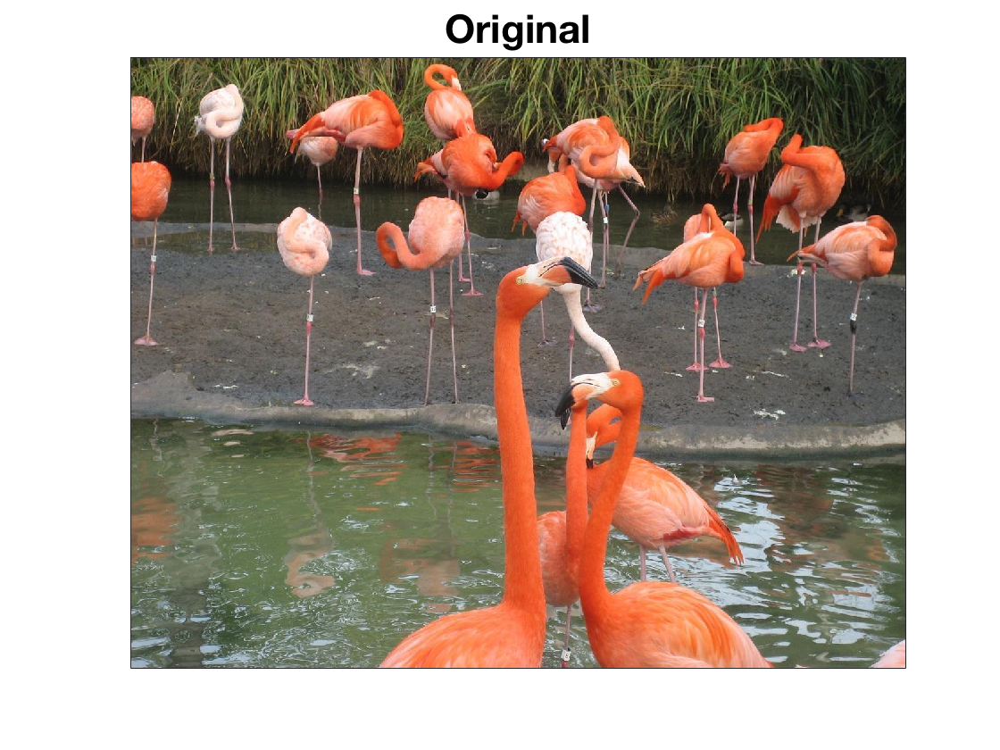
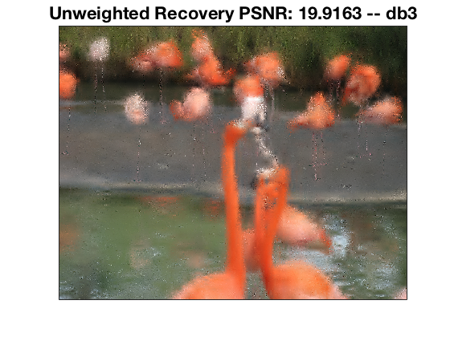
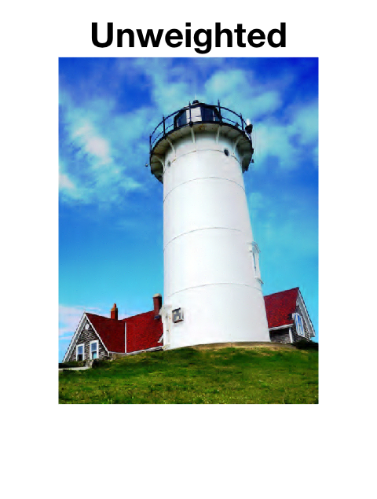
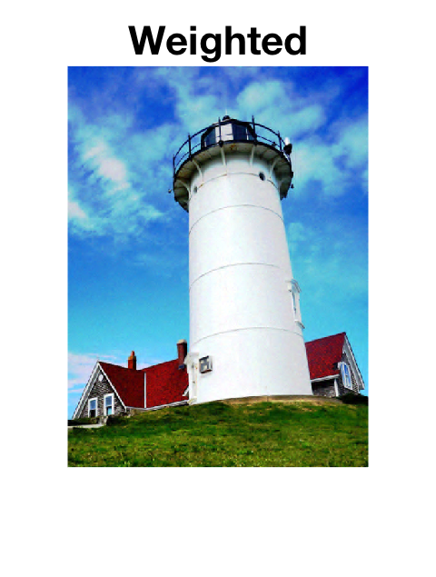
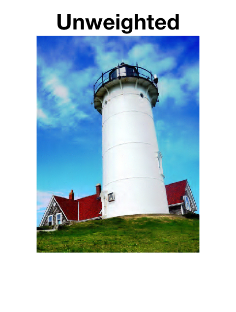
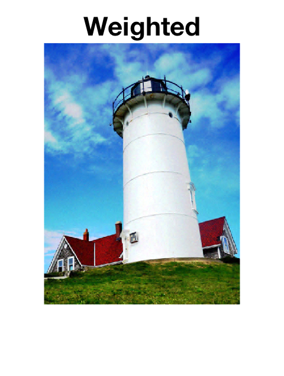

Weighted $\ell_1$-minimization
In an upcoming work a convex optimization approach,
based on weighted $\ell_1$-regularization, is proposed
for reconstructing sparse wavelet representations.
We show our proposed optimization problem
is effective for solving the signal/image inpainting and denoising problems.
We take the funcational representation of an image or signal to be
$$ f(y) = \sum_{j \in \mathcal{J}} c_j \Psi_j(y) . $$
The wavelet coefficients $c = (c_j)_{j \in \mathcal{J}}$
associated to the functional representation of the
object of interest are obtained as minizers of
$$ \min_{c \in \mathbb{R}^N} \lVert c \rVert_{\omega,1} + \lVert Ac - f \rVert_2, $$
where $f \in \mathbb{R}$ is either a vector $m$ subsamples or $m$
noisy observations.
We show that by choosing the weights to be the uniform norms of the wavelet functions,
i.e., the $L^\infty$-norm of $\Psi_j$,
the support of the recovered vector of coefficients forms a particular kind of index set,
a closed tree.
An example of a closed tree. The solid edges form the closed tree.
This kind of index set is consistent with the behavior of many real-world signals and images and therefore our approach applies to a wide class of signals. Furthermore, the numerical examples below show the effectiveness of weighted $\ell_1$-minimization. In addition, we have shown that the sample complexity associated with the weighted $\ell_1$-regularized problem is smaller than the sample complexity of the unweighted problem. This analysis will appear in an upcoming paper.
Image Inpainting
Compare the recovery of a picture of flamingos using unweighted and weighted $\ell_1$-minimization from a random sample of $8\%$ of the pixels. The original image is a $972 \times 1296$ pixel image. We used the Daubechies 3 db3 basis.



Image De-noising
The weighted $\ell_1$-minimization problem can also be used to de-noise an image:
 


